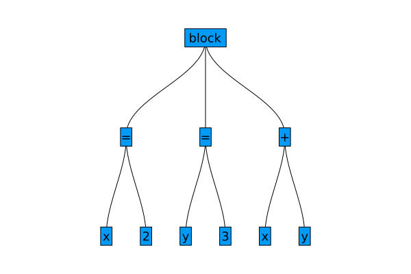

Lab 06: Code introspection and metaprogramming
In this lab we are first going to inspect some tooling to help you understand what Julia does under the hood such as:
- looking at the code at different levels
- understanding what method is being called
- showing different levels of code optimization
Secondly we will start playing with the metaprogramming side of Julia, mainly covering:
- how to view abstract syntax tree (AST) of Julia code
- how to manipulate AST
These topics will be extended in the next lecture/lab, where we are going use metaprogramming to manipulate code with macros.
We will be again a little getting ahead of ourselves as we are going to use quite a few macros, which will be properly explained in the next lecture as well, however for now the important thing to know is that a macro is just a special function, that accepts as an argument Julia code, which it can modify.
Quick reminder of introspection tooling
Let's start with the topic of code inspection, e.g. we may ask the following: What happens when Julia evaluates [i for i in 1:10]?
parsing
julia> :([i for i in 1:10]) |> dumpExpr head: Symbol comprehension args: Array{Any}((1,)) 1: Expr head: Symbol generator args: Array{Any}((2,)) 1: Symbol i 2: Expr head: Symbol = args: Array{Any}((2,)) 1: Symbol i 2: Expr head: Symbol call args: Array{Any}((3,)) 1: Symbol : 2: Int64 1 3: Int64 10
lowering
julia> Meta.@lower debuginfo=:none [i for i in 1:10]ERROR: MethodError: no method matching lower(::Symbol, ::Expr) The function `lower` exists, but no method is defined for this combination of argument types. Closest candidates are: lower(::Module, ::Any) @ Base meta.jl:161
typing
julia> f() = [i for i in 1:10]f (generic function with 1 method)julia> @code_typed debuginfo=:none f()CodeInfo( 1 ── %1 = $(Expr(:foreigncall, :(:jl_alloc_genericmemory), Ref{Memory{Int64}}, svec(Any, Int64), 0, :(:ccall), Memory{Int64}, 10, 10))::Memory{Int64} │ %2 = Core.memoryrefnew(%1)::MemoryRef{Int64} │ %3 = %new(Vector{Int64}, %2, (10,))::Vector{Int64} │ %4 = $(Expr(:boundscheck, true))::Bool └─── goto #5 if not %4 2 ── %6 = Base.sub_int(1, 1)::Int64 │ %7 = Base.bitcast(UInt64, %6)::UInt64 │ %8 = Base.getfield(%3, :size)::Tuple{Int64} │ %9 = $(Expr(:boundscheck, true))::Bool │ %10 = Base.getfield(%8, 1, %9)::Int64 │ %11 = Base.bitcast(UInt64, %10)::UInt64 │ %12 = Base.ult_int(%7, %11)::Bool └─── goto #4 if not %12 3 ── goto #5 4 ── %15 = Core.tuple(1)::Tuple{Int64} │ invoke Base.throw_boundserror(%3::Vector{Int64}, %15::Tuple{Int64})::Union{} └─── unreachable 5 ┄─ %18 = Base.getfield(%3, :ref)::MemoryRef{Int64} │ %19 = Base.memoryrefnew(%18, 1, false)::MemoryRef{Int64} │ Base.memoryrefset!(%19, 1, :not_atomic, false)::Int64 └─── goto #6 6 ── nothing::Nothing 7 ┄─ %23 = φ (#6 => 2, #20 => %57)::Int64 │ %24 = φ (#6 => 1, #20 => %32)::Int64 │ %25 = (%24 === 10)::Bool └─── goto #9 if not %25 8 ── goto #10 9 ── %28 = Base.add_int(%24, 1)::Int64 └─── goto #10 10 ┄ %30 = φ (#8 => true, #9 => false)::Bool │ %31 = φ (#9 => %28)::Int64 │ %32 = φ (#9 => %28)::Int64 └─── goto #12 if not %30 11 ─ goto #13 12 ─ goto #13 13 ┄ %36 = φ (#11 => true, #12 => false)::Bool └─── goto #15 if not %36 14 ─ goto #21 15 ─ %39 = $(Expr(:boundscheck, false))::Bool └─── goto #19 if not %39 16 ─ %41 = Base.sub_int(%23, 1)::Int64 │ %42 = Base.bitcast(UInt64, %41)::UInt64 │ %43 = Base.getfield(%3, :size)::Tuple{Int64} │ %44 = $(Expr(:boundscheck, true))::Bool │ %45 = Base.getfield(%43, 1, %44)::Int64 │ %46 = Base.bitcast(UInt64, %45)::UInt64 │ %47 = Base.ult_int(%42, %46)::Bool └─── goto #18 if not %47 17 ─ goto #19 18 ─ %50 = Core.tuple(%23)::Tuple{Int64} │ invoke Base.throw_boundserror(%3::Vector{Int64}, %50::Tuple{Int64})::Union{} └─── unreachable 19 ┄ %53 = Base.getfield(%3, :ref)::MemoryRef{Int64} │ %54 = Base.memoryrefnew(%53, %23, false)::MemoryRef{Int64} │ Base.memoryrefset!(%54, %31, :not_atomic, false)::Int64 └─── goto #20 20 ─ %57 = Base.add_int(%23, 1)::Int64 └─── goto #7 21 ─ goto #22 22 ─ goto #23 23 ─ goto #24 24 ─ return %3 ) => Vector{Int64}
LLVM code generation
julia> @code_llvm debuginfo=:none f(); Function Signature: f() define nonnull ptr @julia_f_34767() #0 { L18: %gcframe1 = alloca [3 x ptr], align 16 call void @llvm.memset.p0.i64(ptr align 16 %gcframe1, i8 0, i64 24, i1 true) %thread_ptr = call ptr asm "movq %fs:0, $0", "=r"() #10 %tls_ppgcstack = getelementptr i8, ptr %thread_ptr, i64 -8 %tls_pgcstack = load ptr, ptr %tls_ppgcstack, align 8 store i64 4, ptr %gcframe1, align 16 %frame.prev = getelementptr inbounds ptr, ptr %gcframe1, i64 1 %task.gcstack = load ptr, ptr %tls_pgcstack, align 8 store ptr %task.gcstack, ptr %frame.prev, align 8 store ptr %gcframe1, ptr %tls_pgcstack, align 8 %"Memory{Int64}[]" = call ptr @jl_alloc_genericmemory(ptr nonnull @"+Core.GenericMemory#34769.jit", i64 10) %.data_ptr = getelementptr inbounds { i64, ptr }, ptr %"Memory{Int64}[]", i64 0, i32 1 %0 = load ptr, ptr %.data_ptr, align 8 %gc_slot_addr_0 = getelementptr inbounds ptr, ptr %gcframe1, i64 2 store ptr %"Memory{Int64}[]", ptr %gc_slot_addr_0, align 16 %ptls_field = getelementptr inbounds ptr, ptr %tls_pgcstack, i64 2 %ptls_load = load ptr, ptr %ptls_field, align 8 %"new::Array" = call noalias nonnull align 8 dereferenceable(32) ptr @ijl_gc_pool_alloc_instrumented(ptr %ptls_load, i32 800, i32 32, i64 140116204786240) #8 %"new::Array.tag_addr" = getelementptr inbounds i64, ptr %"new::Array", i64 -1 store atomic i64 140116204786240, ptr %"new::Array.tag_addr" unordered, align 8 %1 = getelementptr inbounds ptr, ptr %"new::Array", i64 1 store ptr %0, ptr %"new::Array", align 8 store ptr %"Memory{Int64}[]", ptr %1, align 8 %"new::Array.size_ptr" = getelementptr inbounds i8, ptr %"new::Array", i64 16 store i64 10, ptr %"new::Array.size_ptr", align 8 store <4 x i64> <i64 1, i64 2, i64 3, i64 4>, ptr %0, align 8 %2 = getelementptr inbounds i64, ptr %0, i64 4 store <4 x i64> <i64 5, i64 6, i64 7, i64 8>, ptr %2, align 8 %3 = getelementptr inbounds i64, ptr %0, i64 8 store i64 9, ptr %3, align 8 %4 = getelementptr inbounds i64, ptr %0, i64 9 store i64 10, ptr %4, align 8 %frame.prev37 = load ptr, ptr %frame.prev, align 8 store ptr %frame.prev37, ptr %tls_pgcstack, align 8 ret ptr %"new::Array" }
native code generation
julia> @code_native debuginfo=:none f().text .file "f" .section .rodata.cst32,"aM",@progbits,32 .p2align 5, 0x0 # -- Begin function julia_f_34950 .LCPI0_0: .quad 1 # 0x1 .quad 2 # 0x2 .quad 3 # 0x3 .quad 4 # 0x4 .LCPI0_1: .quad 5 # 0x5 .quad 6 # 0x6 .quad 7 # 0x7 .quad 8 # 0x8 .text .globl julia_f_34950 .p2align 4, 0x90 .type julia_f_34950,@function julia_f_34950: # @julia_f_34950 ; Function Signature: f() # %bb.0: # %L18 push rbp mov rbp, rsp push r15 push r14 push r12 push rbx sub rsp, 32 vxorps xmm0, xmm0, xmm0 vmovaps xmmword ptr [rbp - 64], xmm0 mov qword ptr [rbp - 48], 0 #APP mov rax, qword ptr fs:[0] #NO_APP lea rcx, [rbp - 64] movabs rdi, offset ".L+Core.GenericMemory#34952.jit" mov esi, 10 mov r15, qword ptr [rax - 8] mov qword ptr [rbp - 64], 4 mov rax, qword ptr [r15] mov qword ptr [rbp - 56], rax movabs rax, offset jl_alloc_genericmemory mov qword ptr [r15], rcx call rax mov r12, qword ptr [rax + 8] mov qword ptr [rbp - 48], rax mov rbx, rax movabs r14, 140116204786240 movabs rax, offset ijl_gc_pool_alloc_instrumented mov esi, 800 mov edx, 32 mov rdi, qword ptr [r15 + 16] mov rcx, r14 call rax movabs rcx, offset .LCPI0_0 mov qword ptr [rax - 8], r14 mov qword ptr [rax], r12 mov qword ptr [rax + 8], rbx mov qword ptr [rax + 16], 10 vmovaps ymm0, ymmword ptr [rcx] movabs rcx, offset .LCPI0_1 vmovaps ymm1, ymmword ptr [rcx] vmovups ymmword ptr [r12], ymm0 vmovups ymmword ptr [r12 + 32], ymm1 mov qword ptr [r12 + 64], 9 mov qword ptr [r12 + 72], 10 mov rcx, qword ptr [rbp - 56] mov qword ptr [r15], rcx add rsp, 32 pop rbx pop r12 pop r14 pop r15 pop rbp vzeroupper ret .Lfunc_end0: .size julia_f_34950, .Lfunc_end0-julia_f_34950 # -- End function .type ".L_j_const#2",@object # @"_j_const#2" .section .rodata.cst8,"aM",@progbits,8 .p2align 3, 0x0 ".L_j_const#2": .quad 1 # 0x1 .size ".L_j_const#2", 8 .set ".L+Core.Array#34954.jit", 140116204786240 .size ".L+Core.Array#34954.jit", 8 .set ".L+Core.GenericMemory#34952.jit", 140116247062976 .size ".L+Core.GenericMemory#34952.jit", 8 .section ".note.GNU-stack","",@progbits
Let's see how these tools can help us understand some of Julia's internals on examples from previous labs and lectures.
Understanding runtime dispatch and type instabilities
We will start with a question: Can we spot internally some difference between type stable/unstable code?
Inspect the following two functions using @code_lowered, @code_typed, @code_llvm and @code_native.
x = rand(10^5)
function explicit_len(x)
length(x)
end
function implicit_len()
length(x)
endFor now do not try to understand the details, but focus on the overall differences such as length of the code.
If the output of the method introspection tools is too long you can use a general way of redirecting standard output stdout to a file
open("./llvm_fun.ll", "w") do file
original_stdout = stdout
redirect_stdout(file)
@code_llvm debuginfo=:none fun()
redirect_stdout(original_stdout)
endIn case of @code_llvm and @code_native there are special options, that allow this out of the box, see help ? for underlying code_llvm and code_native. If you don't mind adding dependencies there is also the @capture_out from Suppressor.jl
Loop unrolling
In some cases the compiler uses loop unrolling[1] optimization to speed up loops at the expense of binary size. The result of such optimization is removal of the loop control instructions and rewriting the loop into a repeated sequence of independent statements.
Inspect under what conditions does the compiler unroll the for loop in the polynomial function from the last lab.
function polynomial(a, x)
accumulator = a[end] * one(x)
for i in length(a)-1:-1:1
accumulator = accumulator * x + a[i]
end
accumulator
endCompare the speed of execution with and without loop unrolling.
HINTS:
- these kind of optimization are lower level than intermediate language
- loop unrolling is possible when compiler knows the length of the input
Recursion inlining depth
Inlining[2] is another compiler optimization that allows us to speed up the code by avoiding function calls. Where applicable compiler can replace f(args) directly with the function body of f, thus removing the need to modify stack to transfer the control flow to a different place. This is yet another optimization that may improve speed at the expense of binary size.
Rewrite the polynomial function from the last lab using recursion and find the length of the coefficients, at which inlining of the recursive calls stops occurring.
function polynomial(a, x)
accumulator = a[end] * one(x)
for i in length(a)-1:-1:1
accumulator = accumulator * x + a[i]
end
accumulator
endThe operator ... serves two purposes inside function calls [3][4]:
- combines multiple arguments into one
julia> function printargs(args...) println(typeof(args)) for (i, arg) in enumerate(args) println("Arg #$i = $arg") end endprintargs (generic function with 1 method)julia> printargs(1, 2, 3)Tuple{Int64, Int64, Int64} Arg #1 = 1 Arg #2 = 2 Arg #3 = 3
- splits one argument into many different arguments
julia> function threeargs(a, b, c) println("a = $a::$(typeof(a))") println("b = $b::$(typeof(b))") println("c = $c::$(typeof(c))") endthreeargs (generic function with 1 method)julia> threeargs([1,2,3]...) # or with a variable threeargs(x...)a = 1::Int64 b = 2::Int64 c = 3::Int64
HINTS:
- define two methods
_polynomial!(ac, x, a...)and_polynomial!(ac, x, a)for the case of ≥2 coefficients and the last coefficient - use splatting together with range indexing
a[1:end-1]... - the correctness can be checked using the built-in
evalpoly - recall that these kind of optimization are possible just around the type inference stage
- use container of known length to store the coefficients
AST manipulation: The first steps to metaprogramming
Julia is so called homoiconic language, as it allows the language to reason about its code. This capability is inspired by years of development in other languages such as Lisp, Clojure or Prolog.
There are two easy ways to extract/construct the code structure [5]
- parsing code stored in string with internal
Meta.parse
julia> code_parse = Meta.parse("x = 2") # for single line expressions (additional spaces are ignored):(x = 2)julia> code_parse_block = Meta.parse(""" begin x = 2 y = 3 x + y end """) # for multiline expressionsquote #= none:2 =# x = 2 #= none:3 =# y = 3 #= none:4 =# x + y end
- constructing an expression using
quote ... endor simple:()syntax
julia> code_expr = :(x = 2) # for single line expressions (additional spaces are ignored):(x = 2)julia> code_expr_block = quote x = 2 y = 3 x + y end # for multiline expressionsquote #= REPL[2]:2 =# x = 2 #= REPL[2]:3 =# y = 3 #= REPL[2]:4 =# x + y end
Results can be stored into some variables, which we can inspect further.
julia> typeof(code_parse)Exprjulia> dump(code_parse)Expr head: Symbol = args: Array{Any}((2,)) 1: Symbol x 2: Int64 2
julia> typeof(code_parse_block)Exprjulia> dump(code_parse_block)Expr head: Symbol block args: Array{Any}((6,)) 1: LineNumberNode line: Int64 2 file: Symbol none 2: Expr head: Symbol = args: Array{Any}((2,)) 1: Symbol x 2: Int64 2 3: LineNumberNode line: Int64 3 file: Symbol none 4: Expr head: Symbol = args: Array{Any}((2,)) 1: Symbol y 2: Int64 3 5: LineNumberNode line: Int64 4 file: Symbol none 6: Expr head: Symbol call args: Array{Any}((3,)) 1: Symbol + 2: Symbol x 3: Symbol y
The type of both multiline and single line expression is Expr with fields head and args. Notice that Expr type is recursive in the args, which can store other expressions resulting in a tree structure - abstract syntax tree (AST) - that can be visualized for example with the combination of GraphRecipes and Plots packages.
plot(code_expr_block, fontsize=12, shorten=0.01, axis_buffer=0.15, nodeshape=:rect)
This recursive structure has some major performance drawbacks, because the args field is of type Any and therefore modifications of this expression level AST won't be type stable. Building blocks of expressions are Symbols and literal values (numbers).
A possible nuisance of working with multiline expressions is the presence of LineNumber nodes, which can be removed with Base.remove_linenums! function.
julia> Base.remove_linenums!(code_parse_block)quote x = 2 y = 3 x + y end
Parsed expressions can be evaluate using eval function.
julia> eval(code_parse) # evaluation of :(x = 2)2julia> x # should be defined2
Before doing anything more fancy let's start with some simple manipulation of ASTs.
- Define a variable
codeto be as the result of parsing the string"j = i^2". - Copy code into a variable
code2. Modify this to replace the power2with a power3. Make sure that the original code variable is not also modified. - Copy
code2to a variablecode3. Replaceiwithi + 1incode3. - Define a variable
iwith the value4. Evaluate the different code expressions using theevalfunction and check the value of the variablej.
Following up on the more general substitution of variables in an expression from the lecture, let's see how the situation becomes more complicated, when we are dealing with strings instead of a parsed AST.
replace_i(s::Symbol) = s == :i ? :k : s
replace_i(e::Expr) = Expr(e.head, map(replace_i, e.args)...)
replace_i(u) = uGiven a function replace_i, which replaces variables i for k in an expression like the following
julia> ex = :(i + i*i + y*i - sin(z)):((i + i * i + y * i) - sin(z))julia> @test replace_i(ex) == :(k + k*k + y*k - sin(z))Test Passed
write a different function sreplace_i(s), which does the same thing but instead of a parsed expression (AST) it manipulates a string, such as
julia> s = string(ex)"(i + i * i + y * i) - sin(z)"
HINTS:
- Use
Meta.parsein combination withreplace_iONLY for checking of correctness. - You can use the
replacefunction in combination with regular expressions. - Think of some corner cases, that the method may not handle properly.
If the exercises so far did not feel very useful let's focus on one, that is similar to a part of the IntervalArithmetics.jl pkg.
Write function wrap!(ex::Expr) which wraps literal values (numbers) with a call to f(). You can test it on the following example
f = x -> convert(Float64, x)
ex = :(x*x + 2*y*x + y*y) # original expression
rex = :(x*x + f(2)*y*x + y*y) # result expressionHINTS:
- use recursion and multiple dispatch
- dispatch on
::Numberto detect numbers in an expression - for testing purposes, create a copy of
exbefore mutating
This kind of manipulation is at the core of some pkgs, such as aforementioned IntervalArithmetics.jl where every number is replaced with a narrow interval in order to find some bounds on the result of a computation.
Resources
- Julia's manual on metaprogramming
- David P. Sanders' workshop @ JuliaCon 2021
- Steven Johnson's keynote talk @ JuliaCon 2019
- Andy Ferris's workshop @ JuliaCon 2018
- From Macros to DSL by John Myles White
- Notes on JuliaCompilerPlugin
- 1https://en.wikipedia.org/wiki/Loop_unrolling
- 2https://en.wikipedia.org/wiki/Inline_expansion
- 3https://docs.julialang.org/en/v1/manual/faq/#What-does-the-...-operator-do?
- 4https://docs.julialang.org/en/v1/manual/functions/#Varargs-Functions
- 5Once you understand the recursive structure of expressions, the AST can be constructed manually like any other type.